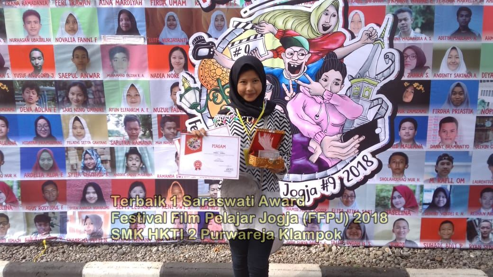
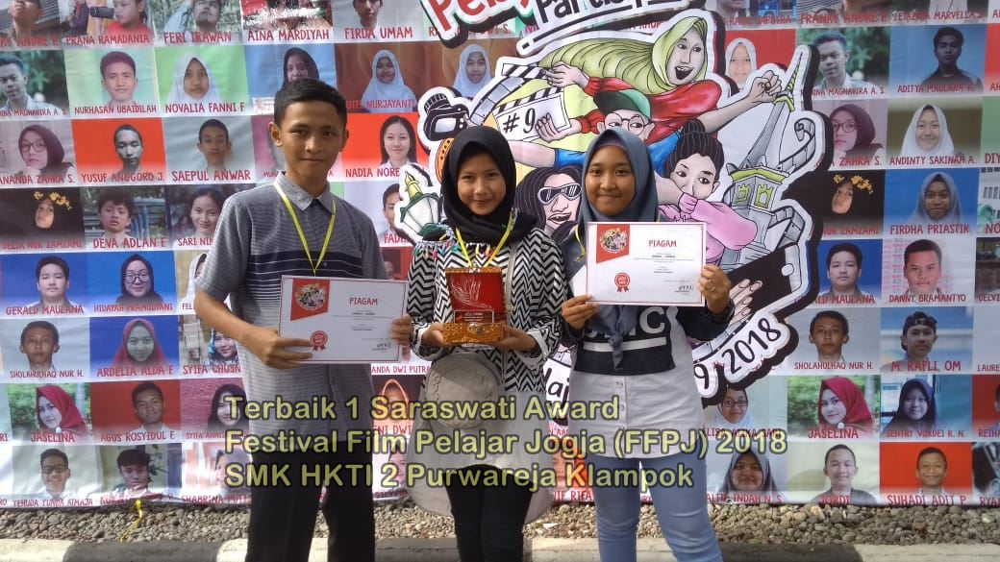
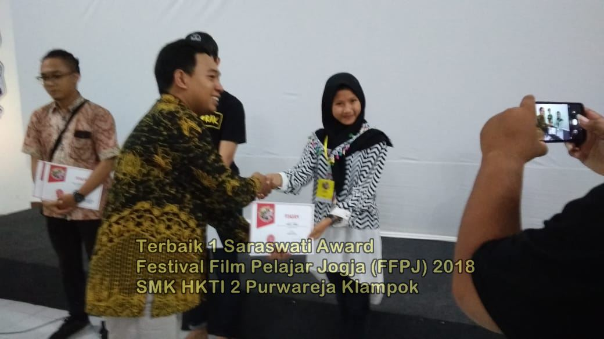
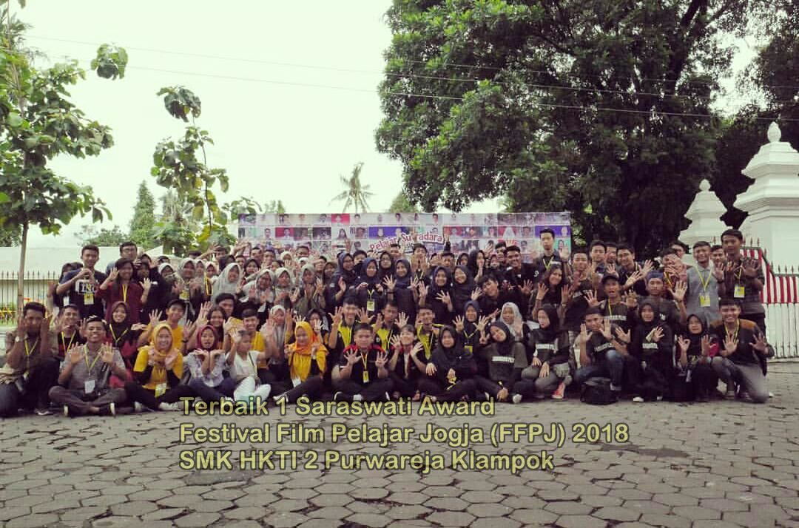
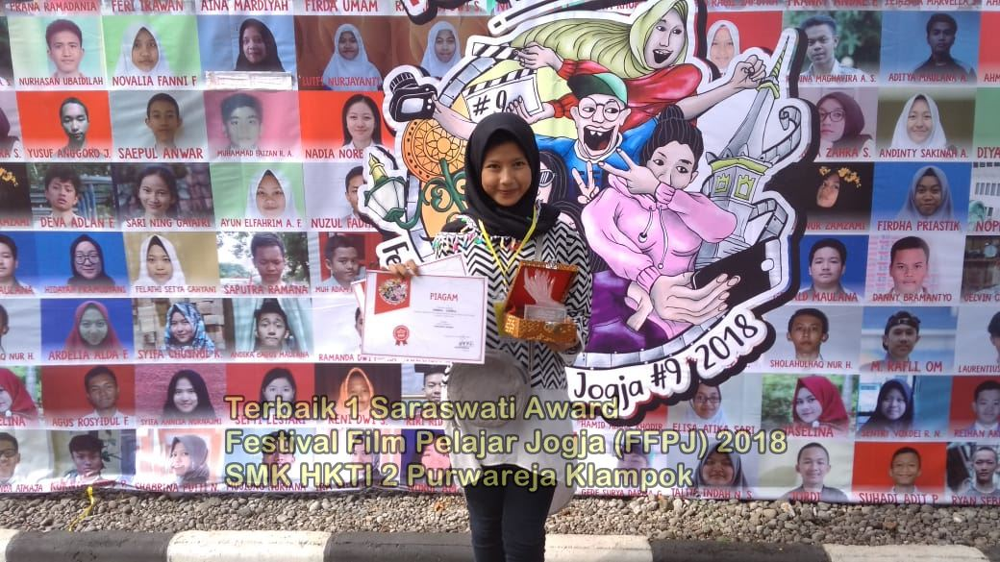
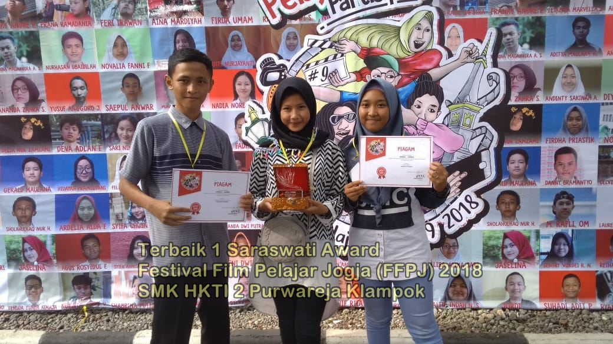
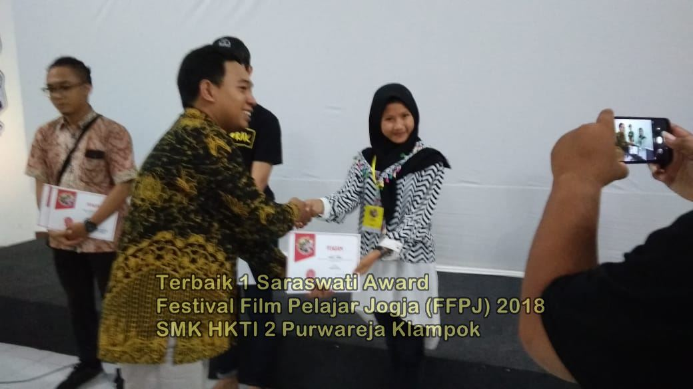
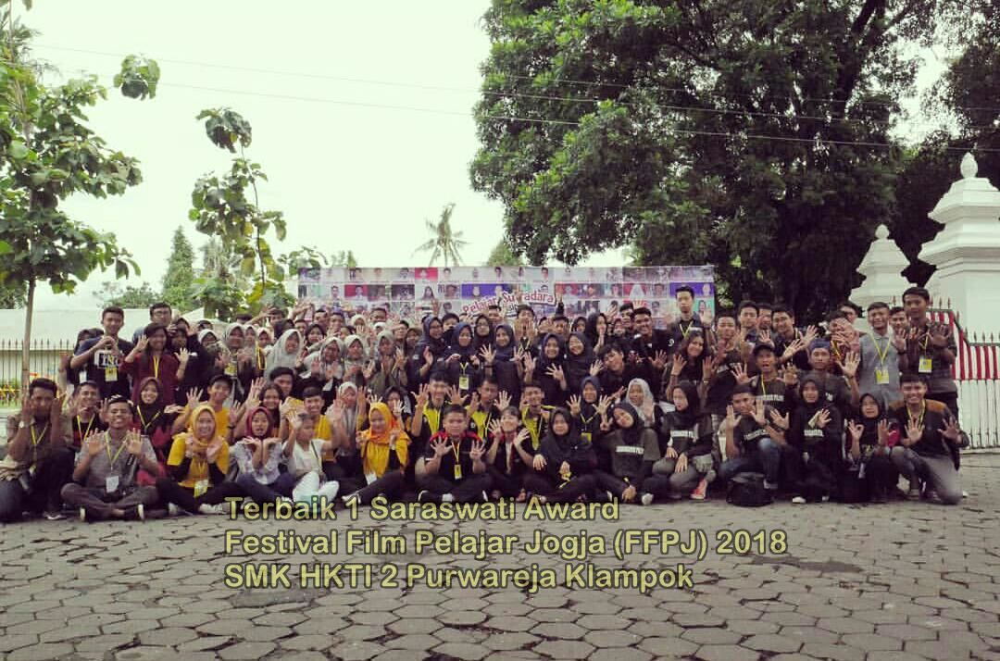
Pelajar Banjarnegara kembali meraih penghargaan pada Festival Film Pelajar Jogja (FFPJ) 2018 yang digelar di Pondok Pemuda Ambarbinangun Bantul, Yogyakarta, 15-16 Desember 2018. Pada ajang kompetisi untuk sineas muda tingkat nasional ini, Umbul-Umbul produksi Hika Pro SMK HKTI 2 Purwareja Klampok berhasil meraih penghargaan sebagai karya terbaik 1 “ SARASWATI AWARD” “Ini adalah karya pertama yang meraih penghargaan tingkat nasional, mudah-mudahan bisa menjadi inspirasi untuk adik kelas agar bisa membuat karya yang lebih bagus” Ungkap Atik Alvianti sebagai sutradara Umbul-Umbul. Untuk penghargaan yang disediakan tahun ini ada 13. Peserta juga mengikuti Kelas Pendidikan Kritis dari Seknas GusDurian, kelas Lingkungan dari Pusat Studi Lingkungan Sanata Dharma Yogyakarta dan Kelas Seni yang difasilitasi oleh Karina Roosvita Indirasari, seorang seniman dan kurator seni, serta Forum Pendidik yang dimoderatori oleh Tommy Taslim.
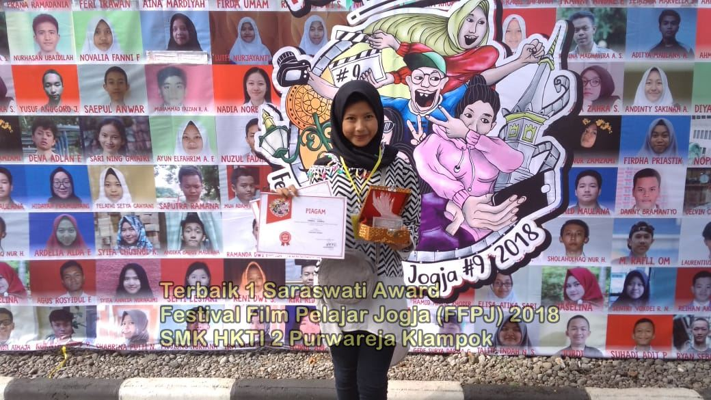
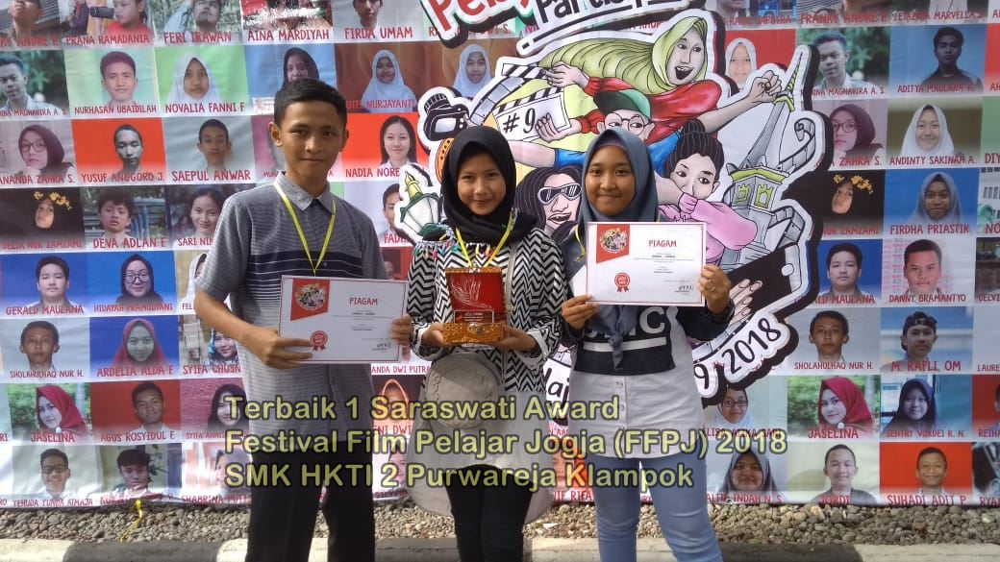
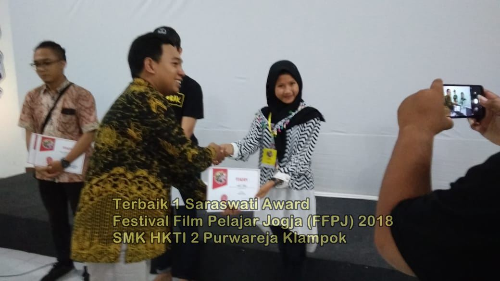
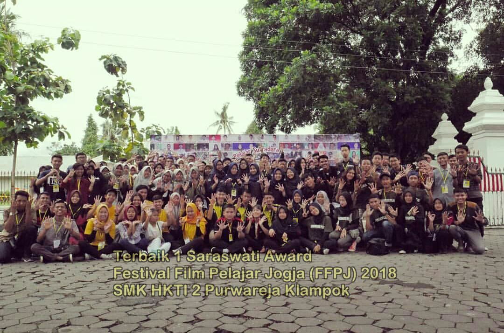